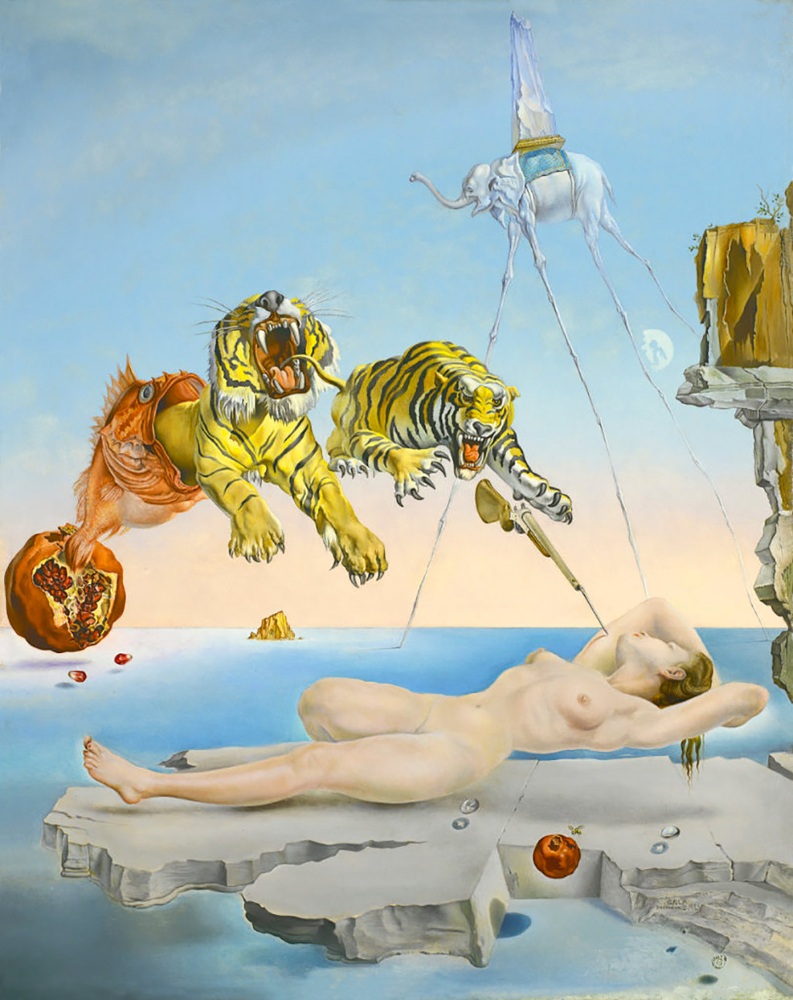

Sogno causato dal volo di un’ape intorno a una melagrana, un attimo prima del risveglio

Salvador Dalì, 1944, olio su tela, 51x41 cm,
El museo Thyssen-Bornemisza, Madrid
l’effetto che uno stimolo esterno, percepito durante il sonno, produce su ciò che stiamo sognando…
Gala sente il ronzio di un’ape, il rumore le genera l’idea del pungiglione che nel sogno è una baionetta, il pericolo fa pensare alle tigri nere e gialle come le api.
Sullo sfondo un elefante dalle zampe scheletriche di ragno con un obelisco sulla groppa cammina su un mare senza onde.
In basso Gala, la bellissima musa di Dalí, riposa sollevata magicamente su uno sperone roccioso a sx.
Un’ape ronza attorno a una melagrana sospesa a mezz’aria
A dx invece una baionetta che sta per pungere il braccio della donna.
La percezione della puntura viene ingigantita dal sogno prendendo la forma di due gigantesche tigri che balzano fuori dalle fauci di un pesce scaturito da una melagrana.
l'enorme melograno da cui fuoriesce un pesce che "genera" due tigri dietro a una baionetta:
rappresenta il violento risveglio della donna dai suoi sogni tranquilli.
Approfondimento Musicale
Marracash (nell'immagine qua sopra), pseudonimo di Fabio Bartolo Rizzo, rapper italiano nato nel 1979.
L'artista in questione ha realizzato una canzone in suo onore chiamata appunto Salvador Dalì (sempre nell'immagine),
in collaborazione con un altro rapper italiano con nome d'arte GUÈ,
inserita nel suo progetto musicale Santeria, album che al giorno d'oggi ha raggiunto 3 dischi di platino.
Mentre il singolo "Salvador Dalì" in questione ne ha ottenuti 2.
Qua sotto la canzone in questione: